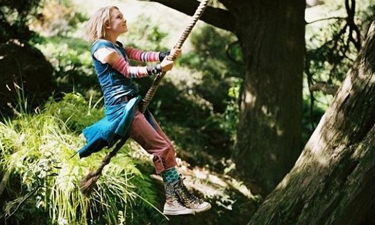

 比起越来越成人化的《哈里波特》，我更喜欢这部简单清新的儿童文学改编之作《仙境之桥》。比起《哈里波特》里那个越来越复杂的魔法世界，我更钟意Jess和Leslie创造的只属于他们两个人的魔幻世界。 《Bridge to Terabithia》（通往特雷比西亚的桥）这部30年来影响了无数美国人的优秀儿童小说，终于在今年被搬上了大荧幕。这是一个以想象力著称的故事，也因此为电影的改编提出了难题：怎样将原著中天马行空的想象力还原成具象的视觉元素。毫无疑问，电影《仙境之桥》做到了，以一种朴实的方式。 有着完全不同家庭背景的两个孩子，女孩富有，男孩贫穷。男孩子在学校里处处遭人欺负，却被新来的转校女生带去一个神奇的世界。对于想像的共同渴望让他们成为了朋友。丛林深处的河流对岸那片神秘的森林，生活在其中的各种魔法生物，代表正义的精灵，代表邪恶的巨人，树人，象鸟……还有Jess和Leslie栖息其中的年代久远的树屋。这是他们俩创造的梦幻之地，他们就是这里的国王和皇后，为维护自己领地的正义同各种邪恶力量勇敢地抗争。 两个孩子就这样在他们的魔幻世界里简单地快乐着，即使最后女孩因为男孩无意失约而不幸落水遇难，男孩还是在属于他们的世界里和妹妹一起继续着他们的梦想。河上架起了一座桥，这座桥承载着男孩对女孩的思念，走过去，在他们的世界里，想象将永远延续下去，正如桥上写着的那样——“Nothing Crushes Us”。 很喜欢Jess灰蓝色的眼睛，也喜欢Leslie干净从容的表情。女孩走了，她更像一个引导男孩走向梦想世界的天使，她的离开换来的是男孩的成长和更加丰饶的想象之地。